Minecraft Help
Run forge
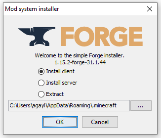
Click OK
Launch minecraft launcher
Click Installations
Click EDIT under the forge installation.
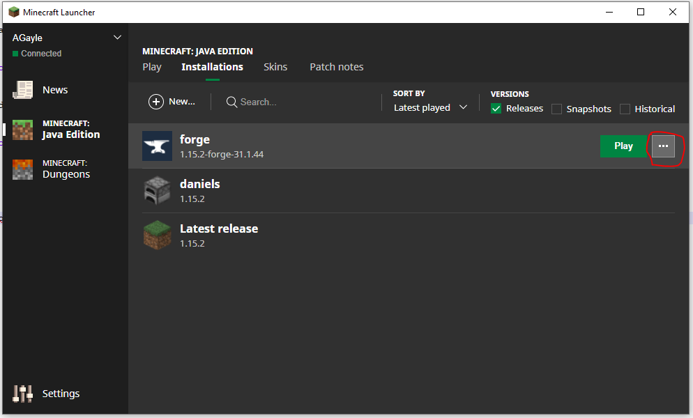
Change the name to 'Normandy' and the location to, something else. I recommend somewhere on your Desktop or in Documents.
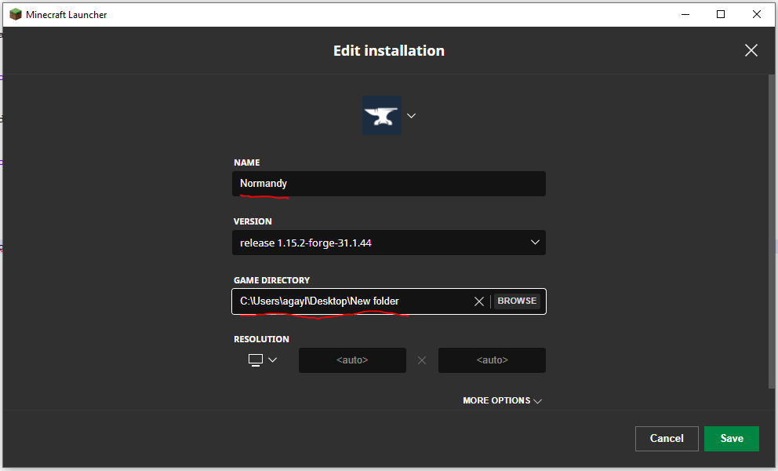
Click PLAY, but make sure that Normandy is selected.
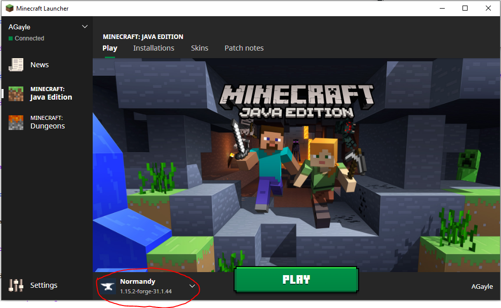
Wait until Minecraft launches. This could take several minutes. You should see Forge things. The window will close and reopen.
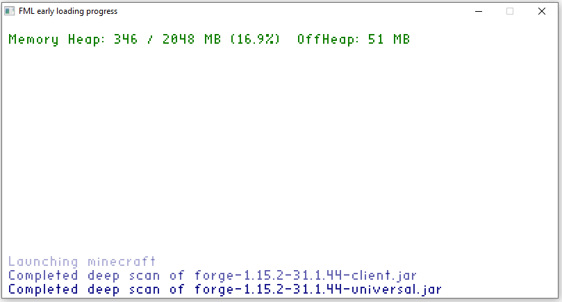
When it gets finished downloading, you will you will see Forge Minecraft.
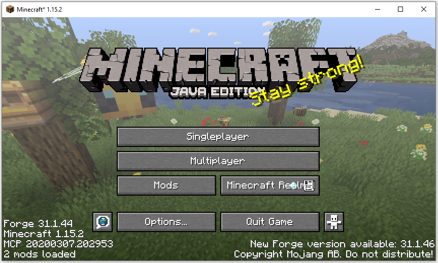
Close Forge Minecraft.
Unzip the Normandy modpack.
Copy ALL the files from the unzipped Normandy modpack folder directly into the location you installed the Normandy Minecraft installation to earlier. (I recommended somewhere on your Desktop or in Documents.) When Windows asks you if you want to replace the files, say YES.
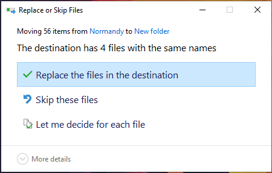
Click PLAY, on the launcher again, making sure that Normandy is selected.
Once Minecraft launches for the second time, click Multiplayer.
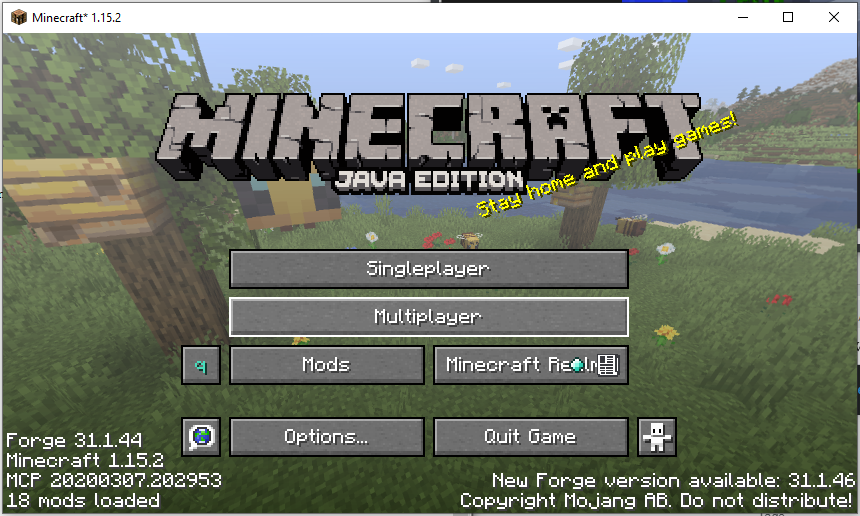
Click Add Server.
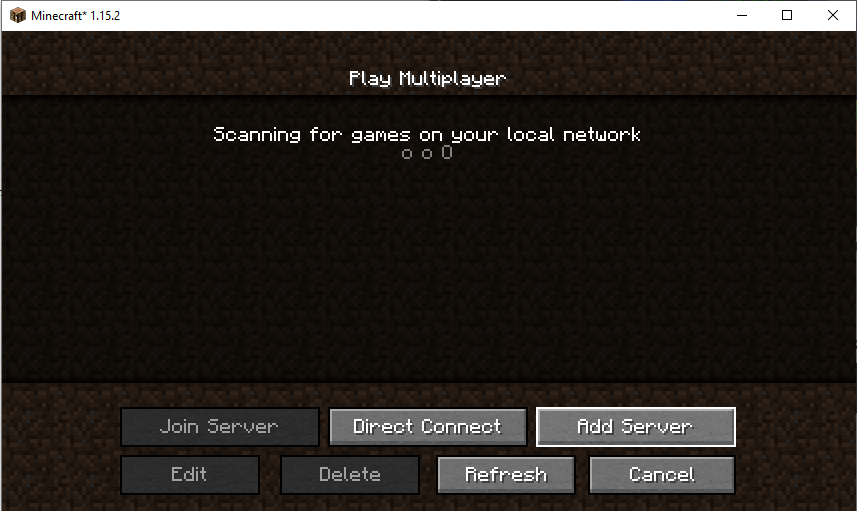
Name the server Normandy.
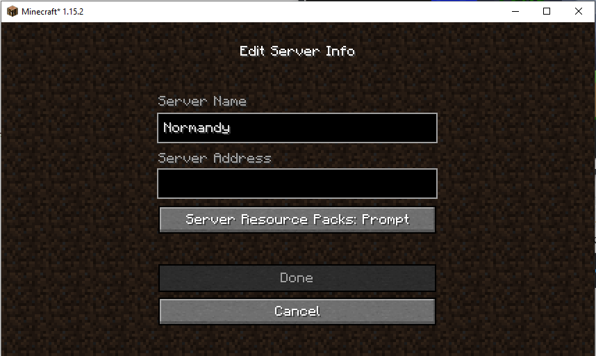
Enter minecraft.circlewars.com as the Server Address.
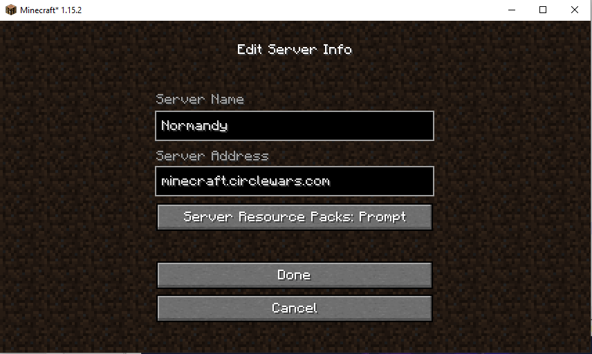
Click Done.